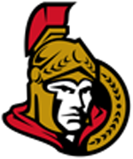
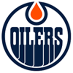
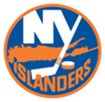
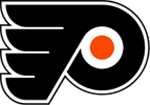
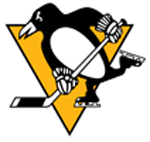
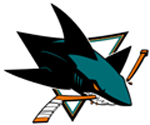
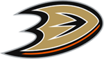
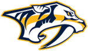
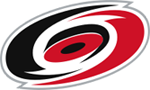

Cliquez sur les buttons pour plus d’information

CANADIENS DE MONTRÉAL

Les Canadiens de Montréal sont une franchise de hockey sur glace professionnel située à Montréal dans la province de Québec au Canada. L’équipe est membre de la Division Atlantique de l’Association de l’Est dans la Ligue nationale de hockey. Bien que le nom le plus utilisé pour désigner cette équipe soit les « Canadiens de Montréal », son nom officiel est le Club de hockey Canadien, inc..
Les « Canadiens » disputent leurs matchs locaux au Centre Bell, connu sous le nom de Centre Molson jusqu’en 2002. Avant 1996, l’équipe était domiciliée au Forum de Montréal, où elle a reçu ses adversaires pendant sept décennies et remporté 22 de ses 24 Coupes Stanley. Le Forum est considéré comme le véritable temple du hockey.
Fondés en 1909, les Canadiens de Montréal sont la plus vieille équipe de hockey au monde toujours en activité, sans aucune interruption. Elle fait partie des équipes fondatrices de la ligue avec les Arenas de Toronto, les Sénateurs d’Ottawa et les Wanderers de Montréal et fait également partie des six équipes originales de la LNH, groupe de six équipes s’étant partagé la lutte pour la Coupe entre 1942 et 1967. Avec ses 24 Coupes Stanley, la franchise est l’équipe la plus titrée de toute l’histoire de la LNH, loin devant les Maple Leafs de Toronto au deuxième rang, avec une récolte de 13 Coupes Stanley.
SÉNATEURS D’OTTAWA

Les Sénateurs d’Ottawa sont une franchise de hockey sur glace professionnel de la Ligue nationale de hockey évoluant dans le secteur Kanata de la ville d’Ottawa dans la province de l’Ontario au Canada.
Bien avant la venue des Sénateurs dans la LNH en 1992, la ville d’Ottawa avait déjà adopté le hockey professionnel : les Silver Seven (surnom de l’équipe) a évolué au début des années 1900 dans le paysage du hockey d’Amérique du Nord. Les Sénateurs sont à la base de la création de la LNH en 1917 et y ont œuvré pendant plus de quinze ans avant d’être démantelés à la fin de la saison 1933-1934.
L’équipe a gagné à 11 reprises la Coupe Stanley : certaines fois cela fut à la suite de défis (1903, 1904, 1905, 1906, 1909, 1910 et 1911) et d’autres fois au terme de saisons de la LNH (1920, 1921, 1923 et 1927).
TORONTO MAPLE LEAFS

Les Maple Leafs de Toronto sont une franchise de hockey sur glace professionnel. Aujourd’hui, le club des Maple Leafs de Toronto fait partie de la Ligue nationale de hockey (LNH) et est situé à Toronto, au Canada. Par le passé, l’équipe a porté les noms d’Arenas de Toronto de 1917 à 1919 puis de Saint-Patricks de TorontoNote 1 de 1919 à 1926.
Les Maple Leafs ont remporté treize Coupes Stanley dans leur histoire. Leur dernière victoire remonte à la saison 1966-1967. Ils n’ont donc remporté aucune Coupe Stanley depuis l’expansion de 1967.
JETS DE WINNIPEG

Les Jets de Winnipeg évoluent dans la Ligue nationale de hockey et sont basés à Winnipeg, dans la province du Manitoba, au Canada à la suite du déménagement des Thrashers d’Atlanta. Elle a commencé ses activités lors de la saison 2011-2012. Le nom officiel de l’équipe est dévoilé le 24 juin 2011 lors du premier choix de repêchage de l’équipe. Le logotype de l’équipe, quant à lui, est dévoilé le 22 juillet 2011. C’est actuellement la seule équipe de la ligue nationale de hockey basée dans le Manitoba et la septième au Canada avec les Flames de Calgary, les Oilers d’Edmonton, les Canadiens de Montréal, les Sénateurs d’Ottawa, les Maple Leafs de Toronto et les Canucks de Vancouver.
Winnipeg a eu auparavant deux équipes de hockey sur glace nommées « Jets de Winnipeg » : Jets de Winnipeg (1972-1996), ancienne équipe de la LNH ayant déménagé à Phoenix pour devenir les Coyotes de Phoenix et les Jets de Winnipeg, équipe ayant évolué dans la Ligue de hockey de l’Ouest de 1964 à 1973 avant d’être renommée. Le choix du nouveau nom de cette franchise est donc historique.
L’existence de la nouvelle équipe de Winnipeg prend forme sous l’impulsion de True North Sports and Entertainment qui achète les Thrashers d’Atlanta en juin 2011. La Ligue nationale de hockey (LNH) donne son aval pour le déménagement de la franchise à Winnipeg. En effet, la délocalisation est unanimement approuvée par le Conseil des gouverneurs de la LNH le 21 juin 2011. Un des objectifs des nouveaux propriétaires de la franchise était de vendre 13 000 abonnements lors de la première saison sur une possibilité totale de 15 015 sièges disponibles. L’objectif est atteint en quelques jours seulement.
OILERS D’EDMONTON

Les Oilers d’Edmonton sont une équipe professionnelle de hockey sur glace de la Ligue nationale de hockey.
Dès sa première année dans la LNH, Wayne Gretzky termine avec le même total de points que Marcel Dionne des Kings de Los Angeles au sommet des pointeurs de la saison régulière, avec 137 points. Cependant le trophée Art Ross lui échappe car il a marqué moins de buts que Dionne. L’équipe, de son côté, termine la saison avec 69 points. La saison suivante, elle en marque 74 et, en 1981-1982, elle finit avec 111 points pour remporter son premier de six titres de division consécutifs.
Dans les années 1980, l’association des Oilers avec Gretzky s’avère prolifique. Ils occupent les cinq premiers rangs des équipes ayant marqué le plus de buts en une saison ainsi que les trois premières places pour la moyenne de buts par match. À l’issue de leur cinquième saison dans la LNH, les Oilers remportent la Coupe Stanley pour la première fois de leur histoire et la gagnent ensuite à quatre reprises dans les six années qui suivent. Les Oilers, lors de la saison 1983-1984, créent un nouveau record en conservant une moyenne de 5,58 buts marqués par match. Pendant trois saisons de cette décennie, quatre coéquipiers réussissent à franchir la barre des 100 points : Gretzky (196), Mark Messier (106), Glenn Anderson (104) et Jari Kurri (104) en 1982-1983 ; Gretzky (205), Paul Coffey (126), Kurri (113) et Messier (101) en 1983-1984 et enfin Gretzky (215), Coffey (138), Kurri (131) et Anderson (102) en 1985-1986. Ils sont également la seule équipe à avoir aligné trois marqueurs de plus de 50 buts lors d’une même saison régulière : en 1983-1984 Gretzky marque 87 buts, Anderson 54 et Kurri 52 et en 1985-1986, Kurri compte 68 buts, Anderson 54 et Gretzky 52.
FLAMES DE CALGARY

Les Flames de Calgary sont une équipe canadienne professionnelle de hockey sur glace de la Ligue nationale de hockey.
L’histoire de la franchise débute en 1971 dans la Ligue nationale de hockey alors que celle-ci accorde à la ville d’Atlanta les droits d’implanter une concession, la première dans le sud-est des États-Unis. L’équipe prend le nom de Flames pour commémorer les flammes qui détruisirent complètement Atlanta en septembre 1864 lorsque le nordiste William Tecumseh Sherman prit la ville aux mains des sudistes. Le club évolue dans la LNH de 1973 à 1980 avant d’être vendu et transféré à Calgary dans la province de l’Alberta.
Le 21 mai 1980, l’homme d’affaire Nelson Skalbania et un groupe d’entrepreneurs de la province de l’Alberta, au Canada, composé des frères Byron J. et Daryl K. Seaman, de Harley N. Hotchkiss, Norm Green, Ralph Scurfield et Norman Kwong annoncent l’achat des Flames d’Atlanta et leur intention de les relocaliser en Alberta. L’équipe fait ses débuts la saison suivante sur la glace du Stampede Corral à Calgary en conservant le nom originel du club.
Les Flames eurent Jim Playfair pour entraîneur lors de la saison 2006-2007 avant de nommer à l’été 2007 Mike Keenan à ce poste. L’incapacité de Keenan à faire passer les Flames plus loin que la première ronde des séries signifia la fin des émissions pour lui alors que Darryl Sutter le mit à la porte le 25 mai 2009.
CANUCKS DE VANCOUVER

Les Canucks de Vancouver sont une équipe professionnelle de hockey sur glace de la Ligue nationale de hockey.
Les Canucks de Vancouver sont créés en 1945 dans la Pacific Coast Hockey League (PCHL). Lorsque cette dernière fusionne avec Western Canada Senior Hockey League pour devenir la Western Hockey League, la franchise devient une des 8 premières équipes à y évoluer. Les Canucks intègrent la Ligue nationale de hockey en 1970, lors d’un repêchage d’expansion qui permet également aux Sabres de Buffalo de faire leur apparition dans la ligue. L’entraîneur en chef est alors Hal Laycoe.
Une seule des 22 premières saisons de la franchise se solde par un bilan positif. Même sa qualification au championnat de la Coupe Stanley en 1982 contre les Islanders de New York s’est produite lors une saison perdante.
BRUINS DE BOSTON

Les Bruins de Boston, en anglais Boston Bruins, sont une franchise professionnelle de hockey sur glace d’Amérique du Nord. L’équipe est basée à Boston dans le Massachusetts aux États-Unis et joue ses matchs à domicile dans la salle du TD Garden depuis 1995. Auparavant l’équipe a joué quelques saisons dans le Boston Arena puis la plus grande partie de son histoire dans le Boston Garden. Ils font partie de la ligue principale d’Amérique du Nord, la Ligue nationale de hockey (également désignée par le sigle LNH), et s’alignent dans la division Atlantique dans l’association de l’Est.
Fondés en 1924, les Bruins sont une des plus vieilles équipes de la LNH encore en activité ; ils font partie entre 1942 et 1967 des « six équipes originales » en compagnie des équipes des Blackhawks de Chicago, des Canadiens de Montréal, des Maple Leafs de Toronto, des Rangers de New York et des Red Wings de Détroit. C’est la première équipe de la Ligue nationale de hockey à s’être installée dans une ville des États-Unis et seuls les Canadiens et les Maple Leafs, alors nommés Saint-Patricks, sont antérieurs à l’équipe des Bruins. Depuis leur première saison en 1924-1925, ils disputent à dix-huit reprises la finale de la Coupe Stanley et remportent les finales de 1929, 1939, 1941, 1970, 1972 et 2011. Leurs plus vieux et historiques rivaux sont les Canadiens de Montréal qui les ont battus à chaque fois que les deux équipes se sont rencontrées en finale.
Plus de huit cents joueurs différents ont porté les couleurs noir, or et blanc des Bruins depuis leurs débuts et plus de cinquante personnalités de l’équipe font partie du Temple de la renommée du hockey. C’est ainsi le cas de : « Ray » Bourque, également meilleur pointeur de l’histoire du club, Robert « Bobby » Orr, Phil Esposito, Tiny Thompson ou encore Cam Neely. L’équipe actuelle est entraînée par Bruce Cassidy et est menée par le capitaine slovaque Zdeno Chára.
WILD DU MINNESOTA

Le Wild du Minnesota est une franchise professionnelle de hockey sur glace d’Amérique du Nord. L’équipe évolue dans la Ligue nationale de hockey depuis la saison 2000-2001 ; basée à Saint Paul, il s’agit de la première équipe localisée dans le Minnesota aux États-Unis à rejouer dans l’État depuis le départ des North Stars pour devenir les Stars de Dallas en 1993.
Ils jouent leurs rencontres à domicile dans la salle du Xcel Energy Center, d’une capacité de 18 064 places ; ils se qualifient pour la première fois pour les séries éliminatoires en 2002-2003 et sont éliminés en finale de l’Association par les Mighty Ducks d’Anaheim.
À la suite du départ des North Stars du Minnesota pour devenir les Stars de Dallas en 1993, l’État du Minnesota reste sans équipe dans la LNH pendant sept saisons. Le 25 juin 1997, la Ligue nationale de hockey annonce que le groupe Minnesota Hockey Ventures Group, LP obtiendra une franchise d’expansion et que l’équipe débutera pour la saison 2000-2001. Au mois de novembre de la même année, les six noms possibles pour l’équipe sont dévoilés : Blue Ox, Freeze, Northern Lights, Voyageurs, White Bears et Wild ; le choix de prendre nom de Wild – sauvage en français – est officiellement annoncé fin janvier 1998. Entre-temps, Jac Sperling est nommé Chief Executive Officer de la franchise en décembre 1997, poste qu’il occupera jusqu’en 2004.
SABRES DE BUFFALO

Les Sabres de Buffalo sont une équipe professionnelle de hockey sur glace de la Ligue nationale de hockey.
La ville de Buffalo, ville située dans l’Ouest de l’État de New York, a déjà eu l’expérience d’une équipe de hockey sur glace au niveau professionnel. Les Bisons de Buffalo ont débuté dans la Canadian Professional Hockey League en 1928 mais au bout d’une saison, avec la dissolution de cette ligue, les Bisons changent de ligue pour la Ligue internationale de hockey. L’équipe a notamment remporté deux championnats consécutifs de la ligue en 1932 et 1933. En 1936, la Canadian-American Hockey League et la LIH fusionnent pour former l’International American Hockey League. Le 17 mars de cette année, la patinoire des Bisons de Buffalo est endommagée lors d’une tempête de neige. Ils rejoignent malgré tout l’IAHL pour sa première saison mais en jouant tous les matchs à domicile dans la ville de Niagara Falls (Ontario) en Ontario. Après seulement onze rencontres jouées, la direction des Bisons décident d’arrêter leurs activités, les finances ne suivant pas. Les matchs joués par les Bisons ne sont pas comptabilisés à la fin de la saison régulière qui se termine avec seulement sept équipes.
RANGERS DE NEW YORK

Les Rangers de New York (en anglais : New York Rangers) sont une franchise professionnelle de hockey sur glace basée à New York dans l’État du même nom aux États-Unis qui évolue dans la Ligue nationale de hockey (LNH). Ils font partie de la division Métropolitaine dans l’association de l’est. Fondés en 1926, les Rangers sont une des six équipes originales en compagnie des Blackhawks de Chicago, des Bruins de Boston, des Canadiens de Montréal, des Maple Leafs de Toronto et des Red Wings de Détroit. L’équipe fait partie du holding Cablevision.
Depuis leur première saison, les Rangers ont disputé à onze reprises la finale de la Coupe Stanley qu’ils ont remportée en 1928, 1933, 1940 et 1994. Avec ces quatre titres, les Rangers sont la franchise la moins titrée des six équipes originales de la LNH.
ISLANDERS DE NEW YORK

Les Islanders de New York, en anglais New York Islanders, sont une équipe professionnelle de hockey sur glace de la Ligue nationale de hockey. L’équipe est actuellement domiciliée à Brooklyn dans l’État de New York, au Sud de New York. La formation évolue dans la Division Métropolitaine de l’association de l’Est. Les Islanders sont l’une des trois franchises de la LNH dans la zone métropolitaine de New York avec les Devils du New Jersey et les Rangers de New York, dont ces derniers font l’objet d’une vive rivalité avec les Islanders. Cette rivalité est connue sous le nom de : « La bataille de New York ».
Fondés en 1972, les Islanders jouent au Nassau Veterans Memorial Coliseum, depuis leur création jusqu’en 2015. Les Islanders ont remporté quatre années de suite la Coupe Stanley entre 1980 et 1983, ce qui fait d’eux la huitième des neuf dynasties reconnues par la LNH dans son histoire. Toutefois, l’équipe n’a pas gagné un titre de division depuis 1987-1988, et leur dernière victoire des séries éliminatoires remonte à la saison 1992-1993.
Huit anciens membres des Islanders ont été intronisés au Temple de la renommée du hockey, dont sept d’entre eux prirent part aux quatre victoires de la Coupe Stanley. Al Arbour, Mike Bossy, Clark Gillies, Denis Potvin, Billy Smith, Bill Torrey et Bryan Trottier. Pat LaFontaine quant à lui, a été intronisé plus récemment, en 2003.
DEVILS DU NEW JERSEY

Les Devils du New Jersey sont une franchise professionnelle de hockey sur glace basée à Newark dans le New Jersey. Ils sont membres de la Ligue nationale de hockey et jouent dans l’association de l’Est (division Métropolitaine), en compagnie des Flyers de Philadelphie, des Penguins de Pittsburgh, des Hurricanes de la Carolina, des Capitals de Washington, des Blue Jackets de Columbus, des Islanders de New York et de l’autre équipe new yorkaise, les Rangers.
La franchise est fondée à Kansas City dans le Missouri en 1975 avant de déménager à Denver dans le Colorado deux saisons plus tard puis de s’établir définitivement dans le New Jersey en 1983. Sous la direction du directeur général Lou Lamoriello depuis 1987, les Devils ont remporté la Coupe Stanley à trois reprises en 1995, 2000 et 2003.
Dès son arrivée dans le New Jersey à la saison 2007-2008, l’équipe joue ses matchs à domicile dans la patinoire du Continental Airlines Arena avant de déménager dans le Prudential Center. Les Devils entretiennent une forte rivalité avec les Flyers de Philadelphie et les Rangers de New York, cette dernière étant parfois surnommée Hudson River rivalry, la rivalité de la rivière Hudson. Ce surnom est dû à la rivière qui sépare New York de Newark.
RED WINGS DE DETROIT

Les Red Wings de Détroit (en anglais Detroit Red Wings) sont une franchise professionnelle de hockey sur glace des États-Unis. Ils évoluent dans le championnat principal d’Amérique du Nord : la Ligue nationale de hockey (souvent désignée par le sigle LNH). Les Red Wings – littéralement en français les « Ailes Rouges » – font partie de l’Association de l’Est dans la Division Atlantique.
Située à Détroit dans l’État du Michigan aux États-Unis, la franchise existe depuis 1926 et est devenue, au fil des années, l’une des équipes les plus titrées du championnat de la LNH, avec onze Coupes Stanley. Seuls les Canadiens de Montréal avec vingt-quatre titres et les Maple Leafs de Toronto avec treize sacres ont plus de victoires.
Plus de huit cent joueurs ont porté l’uniforme rouge et blanc de l’équipe depuis ses débuts dont une trentaine ont été ensuite admis au Temple de la renommée du hockey. Parmi ces joueurs, Gordie Howe est celui qui a inscrit le plus de points mais également joué le plus de matchs pour l’équipe. Avec plus de 1 600 rencontres disputées, il compte une centaine de matchs de plus que Steve Yzerman, autre figure importante de l’histoire de l’équipe. Dans les années 1990 et 2000, le défenseur suédois Nicklas Lidström est un joueur emblématique de l’équipe remportant à quatre reprises la Coupe Stanley.
FLYERS DE PHILADELPHIA

Les Flyers de Philadelphie (en anglais Philadelphia Flyers) sont une équipe professionnelle de hockey sur glace située à Philadelphie aux États-Unis et qui fait partie de la Ligue nationale de hockey. Fondée en 1967 lors du repêchage d’expansion de la LNH, l’équipe qui dispute ses matchs au Wells Fargo Center a remporté la Coupe Stanley à deux reprises en 1974 et 1975.
Au début des années 1930, les Pirates de Pittsburgh de la LNH déménagent à Philadelphie et sont renommés Quakers ; après une seule saison où Philadelphie ne remporte que quatre de ses 44 matchs, les Quakers sont dissous par la ligue.
Avant la venue des Flyers en 1967, plusieurs équipes de circuits mineurs et professionnels ont œuvré à Philadelphie. Lorsque la LNH se met à la recherche de nouvelles villes pour son expansion de 1967, la planification d’un nouvel aréna majeur démarre. Aussitôt la franchise accordée à Bill Putnam et Jerry Wolman, ces derniers achètent les As de Québec de la Ligue américaine de hockey pour en faire leur club école.
Des problèmes financiers poussent Wolman à vendre 60 % de ses parts à Ed Snider. Bud Poile est nommé premier directeur général et Keith Allen, entraîneur. Les deux gardiens de but, Doug Favell et Bernard Parent, qui sont repêchés via le repêchage d’expansion, terminent cette première saison au troisième rang de la LNH au niveau des buts accordés. Lors de ce repêchage sont aussi sélectionnés Ed Van Impe, John Miszuk, Lou Angotti, Pat Hannigan, Joe Watson, Gary Dornhoefer et Forbes Kennedy. À ces joueurs repêchés s’ajoutent des signatures d’agents libres tels Jean Gauthier, Léon Rochefort et Brit Selby, tandis que Claude Laforge, John Hanna, Simon Nolet, André Lacroix et Jean-Guy Gendron arrivent à Philadelphie en provenance des As de Québec.
PENGUINS DE PITTSBURGH

Les Penguins de Pittsburgh – littéralement les manchots de Pittsburgh – sont une franchise professionnelle de hockey sur glace des États-Unis. Ils évoluent dans le championnat principal de hockey de l’Amérique du Nord : la Ligue nationale de hockey. Ils font partie de l’association de l’Est et de la division Métropolitaine. Les Penguins existent depuis l’expansion de la Ligue nationale de hockey en 1967.
Depuis leur première saison, les Penguins sont sacrés champions de division à huit reprises, en 1991, 1993, 1994, 1996, 1998, 2008, 2013 et 2014. Ils participent également à six finales de la Coupe Stanley : en 1991 contre les North Stars du Minnesota, l’année suivante en 1992 contre les Blackhawks de Chicago, en 2008 et en 2009 contre les Red Wings de Détroit, en 2016 contre les Sharks de San José et en 2017 contre les Predators de Nashville. Ils remportent à cinq reprises le trophée : en 1991, 1992, 2009, 2016 et 2017.
En 1967, la Ligue nationale de hockey décide de doubler le nombre d’équipes participant à son championnat. La ville de Pittsburgh ayant déjà eu l’expérience d’une équipe de hockey sur glace postule afin d’accueillir une franchise. En effet, dans les années 1925 à 1930, la ville héberge l’équipe des Pirates, équipe homonyme de celle de baseball. Cette dernière demeure jusqu’à la fin de la saison 1929-1930 à Pittsburgh avant de déménager à Philadelphie et devenir les Quakers, pour essayer, en vain, de retrouver l’équilibre financier. Quelques années plus tard, une nouvelle franchise voit alors le jour mais cette fois dans la Ligue américaine de hockey : les Hornets. Cette dernière reste alors à Pittsburgh jusqu’à la fin de la saison 1955-1956 avant de devoir interrompre ses activités en raison de sa patinoire, le Duquesne Gardens, trop vétuste pour continuer à accueillir des matchs de hockey sur glace.
BLACKHAWKS DE CHICAGO

Les Blackhawks de Chicago (en anglais, Chicago Blackhawks) sont une franchise professionnelle de hockey sur glace basée à Chicago, aux États-Unis, qui évolue dans la Ligue nationale de hockey (LNH). Ils font partie de l’association de l’Ouest et de la division Centrale. Fondés en 1926 à Chicago, les Blackhawks sont une des « six équipes originales » en compagnie des équipes des Bruins de Boston, des Canadiens de Montréal, des Maple Leafs de Toronto, des Rangers de New York et des Red Wings de Détroit. Écrit « Black Hawks » en deux mots séparés depuis les débuts de la franchise, le nom est officiellement modifié en « Blackhawks » lors de l’été 1986.
Plus de huit cents joueurs ont porté l’uniforme de la franchise, dont une quarantaine fait partie du Temple de la renommée du hockey. Parmi tous ces joueurs, Stan Mikita joue au club entre les saisons 1958-1959 et 1979-1980. Il est ainsi le meilleur pointeur et passeur de l’histoire de la franchise ainsi que le joueur le plus utilisé, ceci que ce soit en saison régulière ou lors des séries éliminatoires. Il est devancé par Bobby Hull au nombre de buts en séries et en saison régulière, les deux joueurs ayant fait la quasi-totalité de leur carrière ensemble. L’équipe est entraînée par Joel Quenneville, le quarante-troisième entraîneur de l’équipe depuis ses débuts. Rocky Wirtz, propriétaire de l’équipe, possède également la salle où les Blackhawks évoluent depuis 1994, le United Center.
L’équipe remporte sa première Coupe Stanley – un des trophées les plus importants du monde du hockey – au cours de sa huitième saison, la saison 1933-1934. Au total, elle joue quatorze finales de la Coupe Stanley et en remporte six : en 1934, 1938, 1961, 2010, 2013 et en 2015.
CAPITALS DE WASHINGTON

Les Capitals de Washington sont une franchise professionnelle de hockey sur glace de la Ligue nationale de hockey.
Depuis leur toute première saison, les Capitals sont l’une des équipes les plus médiocres, car ils ont raté les séries éliminatoires lors de leurs huit premières saisons. C’est en 1983 qu’ils font leur première apparition aux séries éliminatoires. Ils ont atteint la finale de la Coupe Stanley en 1998 mais ils perdent en quatre matchs contre les Red Wings de Détroit. En 2009-2010, ils remportent pour la première fois le trophée des présidents, trophée remis à l’équipe ayant marqué le plus de points chaque année, mais ils se font éliminer au 1er tour des séries éliminatoires par les Canadiens de Montréal, alors qu’ils menaient la série 3 à 1.
En compagnie des Scouts de Kansas City, les Capitals se joignent à la LNH en 1975. Avec un total de trente franchises de la LNH auxquelles il faut ajouter celles de l’Association mondiale de hockey ainsi que la quantité de joueurs de niveau adéquat limitée, il fallait s’attendre à ce que certains désastres se produisent. C’est ainsi que la première saison des Capitals fut tout simplement une perte de temps, le club perdant 67 de ses 80 matches et ne gagnant qu’une seule fois en dehors de Washington. Ils détiennent le record peu enviable de 17 défaites d’affilée en une saison 1974-1975, qui n’est égalé que par les Sharks de San Jose en 1992-1993. Les Scouts ne firent qu’à peine mieux, et l’expansion fut qualifiée d’erreur par les experts.
L’équipe ne sut faire beaucoup mieux pour le reste des années 1970 et le début des années 1980. Avant l’été 1982, de très sérieuses discussions avaient déjà lieu pour sortir les Capitals de la capitale américaine, et une campagne « Save the Caps » (« Sauvez les Caps ») fut mise en branle. Puis le miracle se produisit.
BLUE JACKETS DE COLUMBUS

Les Blue Jackets de Columbus — littéralement les tuniques bleues de Columbus — sont une équipe professionnelle de hockey sur glace de la Ligue nationale de hockey.
Le nom de la franchise Blue Jackets est une référence à la Guerre de Sécession. Les soldats de l’Union portaient la tenue réglementaire de l’armée américaine : un veston bleu foncé et des pantalons bleu ciel. De là vint le surnom des soldats du Nord : les « Tuniques (ou Uniformes) Bleues » en anglais, les Blue Jackets.
À la suite du départ des Barons de Cleveland, l’État de l’Ohio reste sans équipe de la Ligue nationale de hockey pendant 22 ans. En novembre 1996, un groupe d’hommes d’affaires de l’Ohio dépose une demande à la LNH pour avoir une équipe à Columbus. Le 31 mai 1997, le Nationwide Mutual Insurance Company annonce le plan de financer les 150 millions dollars d’aréna pour Columbus. Le 25 juin, la LNH autorise le Nationwide Mutual Insurance Company d’avoir une franchise à Columbus qui fera ses débuts dans la saison 2000-2001. Le 11 novembre, l’équipe va s’appeler les Blue Jackets en l’honneur de l’Armée de l’Union qui a joué un rôle important dans la guerre de Sécession, qui avait eu lieu dans l’État de l’Ohio et dans la ville de Columbus.
AVALANCHE DU COLORADO

L’Avalanche du Colorado est une franchise professionnelle de hockey sur glace, établie à Denver dans l’État du Colorado, aux États-Unis. Elle fait partie de la division Nord-Ouest dans l’association de l’Ouest et évolue dans la Ligue nationale de hockey. La franchise a été fondée à Québec, et se nommait les Nordiques de Québec jusqu’à son déménagement à Denver en 1995.
L’Avalanche a gagné huit titres consécutifs de division de 1996 à 2003, et s’est qualifiée pour les séries éliminatoires à chacune de ses dix premières saisons dans la LNH, la série prenant fin en 2007. L’Avalanche a gagné la Coupe Stanley deux fois : en 1996 contre les Panthers de la Floride et en 2001 contre les Devils du New Jersey. L’Avalanche est également connue pour avoir été la première équipe dans l’histoire de la LNH à gagner la Coupe Stanley la saison suivant son déménagement.
La rivalité de l’Avalanche avec les Red Wings de Détroit est remarquable, notamment parce que les deux équipes se sont rencontrées cinq fois en sept ans en séries éliminatoires, entre 1996 et 2002.
SHARKS DE SAN JOSE

Les Sharks de San José sont une franchise professionnelle de hockey sur glace d’Amérique du Nord. L’équipe évolue dans la Ligue nationale de hockey (également désignée par le sigle LNH) depuis la saison 1991-1992, et est alignée dans la division Pacifique, dans l’association de l’Ouest. Basée à San José, ville située à l’extrémité sud de la baie de San Francisco, il s’agit de la troisième équipe de la LNH localisée dans la Californie à intégrer cette ligue après les Kings de Los Angeles et les Golden Seals de la Californie qui ont toutes les deux commencé en 1967, les Golden Seals ayant disparu en 1976.
Ils jouent leurs rencontres à domicile dans la salle du SAP Center at San Jose, d’une capacité de 17 562 places. Auparavant, l’équipe a joué les deux premières saisons au Cow Palace. Après des débuts difficiles, les Sharks parviennent à se qualifier pour la première fois pour les séries éliminatoires en 1993-1994. L’équipe actuelle est entraînée par Peter DeBoer.
À la suite de l’arrêt des Golden Seals de la Californie après la saison 1975-1976, la franchise déménage en Ohio pour devenir les Barons de Cleveland ; ces derniers ne jouent que deux saisons en raison de difficultés financières. Le 14 juin 1978, la LNH décide de fusionner deux de ses franchises qui ne parviennent pas à avoir des résultats financiers satisfaisants. Ainsi, les North Stars du Minnesota, derniers du classement général, et les Barons se regroupent sous l’appellation des « North Stars » mais avec la direction des Barons : les frères Gund en tant que propriétaire et Harry Howell, directeur-général des Barons, en tant que nouvel entraîneur. À la fin des années 1980, les Gund ont toujours des parts dans l’équipe des North Stars mais veulent déménager l’équipe dans la baie de San Francisco. La LNH refuse le transfert mais accepte en contrepartie que les Gund vendent leur part dans les North Stars pour pouvoir créer une nouvelle équipe dans la baie de San Francisco.
BLUES DE SAINT-LOUIS

Les Blues de Saint-Louis sont une équipe professionnelle de la Ligue nationale de hockey située à Saint-Louis dans le Missouri aux États-Unis.
Les Blues furent l’une des six équipes ajoutées à la LNH lors de l’expansion de 1967, avec les North Stars du Minnesota, les Kings de Los Angeles, les Flyers de Philadelphie, les Penguins de Pittsburgh et les Seals de Californie, la ligue voyait alors par ses ajouts son nombre d’équipes doublé. Les Blues sont la seule équipe de cette expansion à ne pas avoir remporté la Coupe Stanley, les Flyers de Philadelphie l’ont gagnée en 1974 et 1975, les Penguins de Pittsburgh en 1991, 1992, 2009 et 2016. Les Seals de Californie/North Stars du Minnesota, qui ont fusionné, l’ont gagnée en 1999 sous le nom de Stars de Dallas et les Kings de Los Angeles qui sont les derniers champions en 2012 et 2014
Saint-Louis fut la dernière des équipes d’expansion à entrer officiellement dans la ligue. Ils ont été choisis devant la ville de Baltimore sur l’insistance des Black Hawks de Chicago (propriété de l’influente famille Wirtz de Chicago), qui voulaient laisser la vétuste St. Louis Arena, qu’ils possédaient également, à une nouvelle franchise. Les premiers propriétaires de l’équipe étaient les hommes d’affaires Sid Salomon Jr, son fils Salomon III et Robert L. Wolfson qui se sont vu accorder la franchise en 1966. Sid Salomon III réussit à convaincre son père, d’abord réticent, de faire une offre pour l’équipe. Salomon dépense alors plusieurs millions de dollars pour améliorer l’aréna de Saint-Louis âgé de 38 ans, celle-ci n’était plus aux normes de la LNH depuis les années 1940. Le soir d’inauguration, l’arène comptait 15 000 places, soit 3 000 de plus qu’au début de l’année 1967. Elle n’a jamais cessé d’être restaurée, et atteignait presque 20 000 places lorsque les Blues l’ont quittée en 1994.
GOLDEN KNIGHTS DE VEGAS

Les Golden Knights de Vegas sont une franchise professionnelle de hockey sur glace qui évolue dans la Ligue nationale de hockey à partir de la saison 2017-2018. Elle est basée à Las Vegas, située dans l’État du Nevada, aux États-Unis, et est membre de la division Pacifique de l’association de l’Ouest.
Le 22 juin 2016, la Ligue nationale de hockey annonce qu’elle a voté la création d’une 31e franchise et que celle-ci est accordée à la ville de Las Vegas contre un droit d’entrée de 500 millions de dollars américains2. Le nom de l’équipe et le logo sont dévoilés le 22 novembre 20163. Elle est la première franchise majeure basée à Las Vegas et la première équipe d’expansion de la LNH depuis 2000. L’équipe est la propriété de Black Knight Sports & Entertainment, un consortium mené par Bill Foley2. Elle joue ses matchs à domicile au T-Mobile Arena, à Paradise, dans la banlieue sud de la ville.
Le 16 mai 2017, George McPhee annonce que les Golden Knights ont signé une entente avec les Wolves de Chicago de la Ligue américaine de hockey qui deviennent le club-école de la franchise4. Le 1er juin, ce sont les Mallards de Quad City, évoluant dans l’ECHL, qui deviennent la deuxième affiliation des Golden Knights5
KINGS DE LOS ANGELES

Les Kings de Los Angeles sont une équipe professionnelle de hockey sur glace de la Ligue nationale de hockey fondée en 1967, situé à Los Angeles, en Californie. L’équipe évolue dans la Division Pacifique au sein de l’Association de l’Ouest).
Les Kings ont participé trois fois à la finale de la Coupe Stanley : en 1993, en 2012 et en 2014. Ils ont perdu leur première finale face aux Canadiens de Montréal en cinq matchs et ont gagné la deuxième face aux Devils du New Jersey puis la troisième finale contre les Rangers de New York.
Profitant du désir de la Ligue nationale de hockey d’augmenter son nombre d’équipe, l’entrepreneur canadien Jack Kent Cooke, alors propriétaire des Lakers de Los Angeles, club de Basket-ball évoluant dans la National Basketball Association (NBA), obtient la possibilité d’instaurer une franchise professionnelle sur la côte-ouest des États-Unis. C’est ainsi que voit le jour le 9 février 1966 les Kings de Los Angeles.
Le nouvel amphithéâtre n’étant près qu’à la mi-saison, c’est au Long Beach Arena que les Kings disputent le 14 octobre 1967 le tout premier match de leur histoire et ce, contre une autre équipe de l’expansion 1967, les Flyers de Philadelphie. Brian Kilrea enfile deux buts et aide les Kings à remporter cette première rencontre. Les Kings partagent la première moitié de la saison entre le Long Beach Arena et le Los Angeles Memorial Sports Arena avant de s’installer le 30 décembre 1967 et ce, pour les trente-deux saisons suivantes au Great Western Forum.
DUCKS D’ANAHEIM

Les Ducks d’Anaheim, littéralement les canards d’Anaheim et autrefois appelés Mighty Ducks d’Anaheim, sont une franchise professionnelle de hockey sur glace des États-Unis. Ils évoluent dans le championnat principal de hockey d’Amérique du Nord : la Ligue nationale de hockey. Ils font partie de l’association de l’Ouest et de la division Pacifique. Les Mighty Ducks d’Anaheim ont été fondés en 1993, avant de devenir les Ducks d’Anaheim en 2006 à la suite du changement de propriété de la franchise.
Depuis leur arrivée dans la LNH, les Ducks ont été champions de division, en 2006-2007, et ont participé à deux finales de la Coupe Stanley : en 2003 contre les Devils du New Jersey et puis en 2007 contre les Sénateurs d’Ottawa, année où ils remportent pour la première fois de leur histoire le précieux trophée.
Le 2 octobre 1992, Walt Disney Pictures sort le film The Mighty Ducks – Les petits champions en France et Jeu de puissance au Québec – et lance une nouvelle vague d’engouement pour le hockey sur glace chez les jeunes. Devant le succès du film, qui rapporte 51 millions de dollars, la Walt Disney Company décide de demander à la Ligue nationale de hockey l’octroi d’une franchise. Le 10 décembre, la LNH autorise Disney à développer une franchise1,2,3. Il est décidé que cette équipe prendra ses quartiers à Anaheim, située dans la banlieue de Los Angeles et qui a également l’avantage d’abriter le Disneyland Resort, l’un des plus grands parcs d’attractions de la firme américaine. Les Mighty Ducks d’Anaheim sont les premiers locataires de l’Anaheim Arena, plus tard renommée Arrowhead Pond of Anaheim et actuellement connu sous le nom de Honda Center.
COYOTES DE L’ARIZONA

Les Coyotes de l’Arizona sont une équipe professionnelle de hockey sur glace de la Ligue nationale de hockey basée à Glendale, une banlieue de Phoenix aux États-Unis.
L’équipe est créée à la suite du déménagement des Jets de Winnipeg à Phoenix, en 1996.
Le 3 septembre 2003, la direction des Coyotes de Phoenix annonce une tournée promotionnelle afin de dévoiler le nouveau logo (une tête de coyote qui hurle) ainsi que les nouveaux uniformes de l’équipe.
Le 5 mai 2009, les Coyotes se placent sous la protection de la loi sur les faillites. La LNH annonce qu’elle suspend alors Jerry Moyes de toute fonction officielle au sein de l’équipe. Jim Balsillie offre alors de racheter l’équipe pour un montant de 212,5 millions de dollars américains et de déménager la franchise à Hamilton, dans le sud de l’Ontario. La LNH réussit à bloquer le transfert de la franchise à Jim Balsillie et la ligue en devient propriétaire. En décembre, elle annonce qu’elle a reçu une nouvelle offre de rachat de l’équipe venant cette fois du groupe canado-américain Ice Edge mais les négociations n’aboutissent pas. Le 7 mai 2012, Gary Bettman, commissaire de la LNH, annonce des négociations avec un groupe dirigé par Greg Jamison, ancien dirigeant des Sharks de San José.
PREDATORS DE NASHVILLE

Les Predators de Nashville sont une équipe professionnelle de hockey sur glace de la Ligue nationale de hockey qui évolue dans la division centrale.
Une fois que le logo a été dévoilé, le nom de l’équipe fut déterminé par concours, étalé sur six mois, auquel participèrent les citoyens de la ville de Nashville. Trois noms ont été retenus sur 75 au total : Ice Tigers, Fury et Attack. Leipold a ajouté sa propre proposition au vote, les Predators. Le 13 novembre, Leipold révèle lors d’une conférence de presse que sa proposition « Predators » (prédateurs) l’avait remporté dans une proportion de deux contre un et que la nouvelle franchise serait connue sous le nom des « Predators de Nashville ».
Les Predators jouent depuis leur création au Bridgestone Arena, qui de 1997 à mars 2007 portait le nom de « Gaylord Entertainment Center », ayant une capacité de 17 113 places pour les matchs de hockey sur glace. Le 21 et 22 juin 2003, l’aréna a accueilli le repêchage de la LNH. Le 18 mai 2007, le Sommet Group achète les droits de nommage, de sorte que l’aréna devint le « Sommet Center ». Depuis 2010, Bridgestone détient les droits sur le nom de l’aréna.
HURRICANES DE LA CAROLINE

The Carolina Hurricanes are a professional ice hockey team based in Raleigh, North Carolina. They are members of the Metropolitan Division of the Eastern Conference of the National Hockey League (NHL). The Hurricanes play their home games at the 18,680-seat PNC Arena. The franchise was formed in 1971 as the New England Whalers of the World Hockey Association (WHA), and joined the NHL in 1979 as part of the NHL–WHA merger, renaming themselves the Hartford Whalers. The team relocated to North Carolina in 1997 and won its first Stanley Cup during the 2005–06 season, beating the Edmonton Oilers, four games to three.
STARS DE DALLAS

Les Stars de Dallas sont une équipe professionnelle de hockey sur glace basée à Dallas au Texas. Elle joue dans la Ligue nationale de hockey. Avant 1993, la franchise était connue comme les North Stars du Minnesota.
LIGHTNING DE TAMPA BAY

Le Lightning de Tampa Bay, en anglais Tampa Bay Lightning, est une franchise professionnelle de hockey sur glace de la Ligue nationale de hockey en Amérique du Nord. L’équipe est basée à Tampa en Floride aux États-Unis et joue dans la division Sud-Est de l’association de l’Est. L’équipe est souvent désignés comme les « Bolts », et ce surnom est utilisé sur leur troisième uniforme actuel. Ils jouent leurs matchs à domicile au Tampa Bay Times Forum à Tampa.
La dénomination « Tampa Bay » est souvent utilisé pour décrire une zone géographique métropolitaine qui englobe les villes autour de la baie de Tampa tel que Tampa, St. Petersburg, Clearwater et Bradenton. Le terme « Tampa Bay » dans les noms des franchises sportives professionnelles locales (Rowdies, Rays, Buccaneers, etc.) dénote que celles-ci représentent toute la région de la baie, et pas seulement les villes de Tampa ou St. Petersburg.
PANTHERS DE LA FLORIDE

Les Panthers de la Floride sont une franchise professionnelle de hockey sur glace d’Amérique du Nord. Cette équipe de la Ligue nationale de hockey (également désignée par le sigle LNH) joue à Sunrise dans la région métropolitaine de Floride du Sud, et son siège est à Miami en Floride. Les Panthers sont membres de la division Atlantique de l’association de l’Est et jouent leurs matchs dans l’aréna du BB&T Center dans la ville de Sunrise. Le nom de la franchise vient de la panthère de Floride.